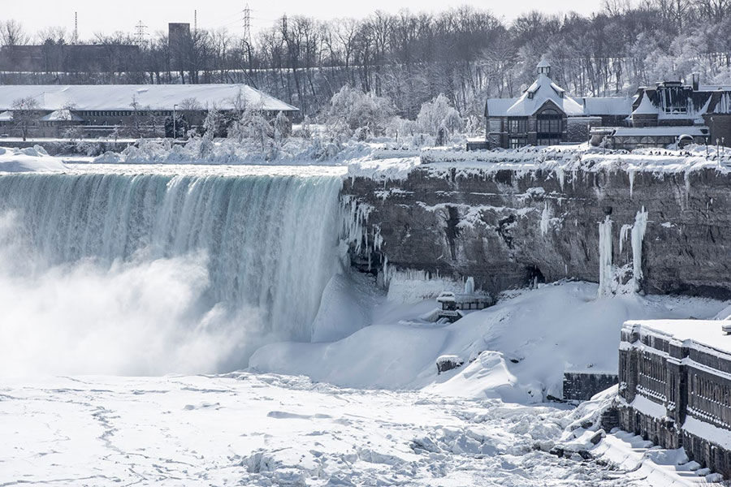
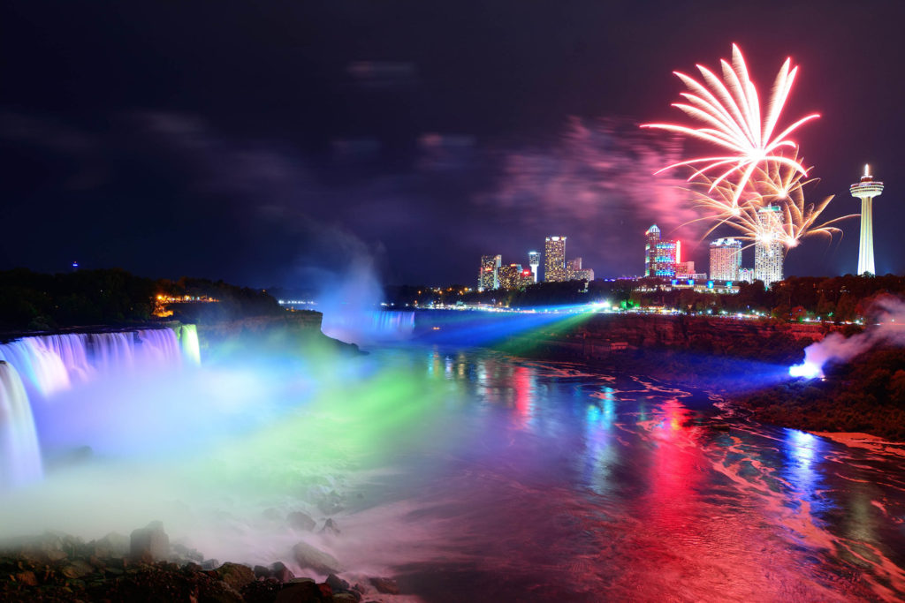

One of the most famous north american natural wonders
Niagara Falls is the collective name for three waterfalls that straddle the international border between the Canadian province of Ontario and the American state of New York. They form the southern end of the Niagara Gorge. From largest to smallest, the three waterfalls are the Horseshoe Falls, the American Falls and the Bridal Veil Falls. The Horseshoe Falls lies on the border of the United States and Canada with the American Falls entirely on the United States' side, separated by Goat Island. The smaller Bridal Veil Falls are also on the United States' side, separated from the American Falls by Luna Island. Located on the Niagara River, which drains Lake Erie into Lake Ontario, the combined falls form the highest flow rate of any waterfall in North America that has a vertical drop of more than 50 metres (160 ft). During peak daytime tourist hours, more than 168,000 m3 (six million cubic feet) of water goes over the crest of the falls every minute. Horseshoe Falls is the most powerful waterfall in North America, as measured by flow rate. The falls are 27 kilometres (17 mi) north-northwest of Buffalo, New York, and 121 kilometres (75 mi) south-southeast of Toronto, between the twin cities of Niagara Falls, Ontario, and Niagara Falls, New York. Niagara Falls was formed when glaciers receded at the end of the Wisconsin glaciation (the last ice age), and water from the newly formed Great Lakes carved a path through the Niagara Escarpment en route to the Atlantic Ocean. Niagara Falls is famed both for its beauty and as a valuable source of hydroelectric power. Balancing recreational, commercial, and industrial uses has been a challenge for the stewards of the falls since the 19th century.